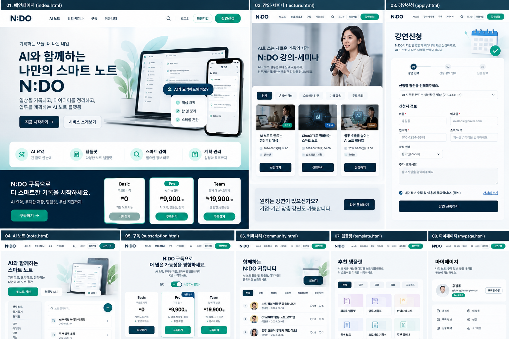

AI LECTURE
AI를 내 일과 일상에 적용하는 방법.
N:DO의 AI 노트 활용 강연을 신청해보세요. 아래 신청은 서버 전송 없는 로컬 시연입니다.
LEARN • APPLY • GROW
기록을 바꾸는
실전형 AI 클래스
단순한 툴 소개를 넘어, AI를 활용한 기록·정리·업무 계획 방법을 실제 사례와 함께 다룹니다.
01 / AI 노트 시작하기
AI 활용법과 실전 노트 구조
02 / 빠른 자료 정리
회의록, 학습 노트, 업무 문서 정리
03 / 나만의 작업 흐름
템플릿과 실천 습관 만들기
강연 일정·가격·진행 방식은 실제 운영 확정 후 공지해야 합니다. 아래 폼은 예약 확정이나 접수 전송을 수행하지 않습니다.
VISUAL CONCEPT
N:DO AI 강연·세미나 화면 콘셉트
서비스 화면을 기획하기 위한 디자인 시안입니다.
